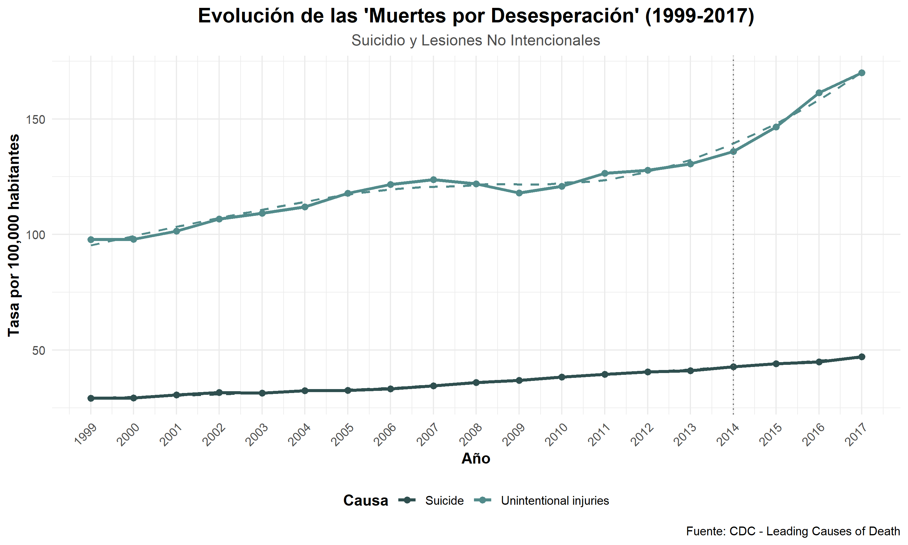

6 6. Análisis Específico: La Crisis de las “Muertes por Desesperación”
Como se discutió en el marco teórico (sección 2.1), el aumento de suicidios y accidentes (especialmente sobredosis) ha sido uno de los fenómenos más preocupantes en la mortalidad de EE.UU. durante el periodo de estudio.
6.1 6.1. Evolución conjunta de suicidio y accidentes
# Definir causas
causas <- c("Suicide", "Unintentional injuries")
# Crear gráfico
datos_nacional %>%
filter(causa %in% causas) %>%
mutate(anio = as.numeric(as.character(anio))) %>%
ggplot(aes(x = anio, y = muertes, color = causa)) +
geom_line(size = 1.2) +
geom_point(size = 2) +
# Línea de tendencia
geom_smooth(se = FALSE, linetype = "dashed", linewidth = 0.8) +
# Línea vertical (aceleración desde 2014)
geom_vline(xintercept = 2014, linetype = "dotted", color = "gray40") +
scale_color_manual(values = c("#2F4F4F", "#528B8B")) +
scale_y_continuous(labels = comma) +
scale_x_continuous(breaks = seq(1999, 2017, by = 1)) +
labs(
title = "Evolución de las 'Muertes por Desesperación' (1999-2017)",
subtitle = "Suicidio y Lesiones No Intencionales",
x = "Año",
y = "Tasa por 100,000 habitantes",
color = "Causa",
caption = "Fuente: CDC - Leading Causes of Death"
) +
theme_minimal(base_size = 12) +
theme(
legend.position = "bottom",
legend.title = element_text(face = "bold"),
plot.title = element_text(face = "bold", size = 16, hjust = 0.5),
plot.subtitle = element_text(size = 12, hjust = 0.5, color = "gray30"),
axis.title = element_text(face = "bold"),
axis.text.x = element_text(angle = 45, hjust = 1)
)
Interpretación: La gráfica sobre la evolución de las “muertes por desesperación” (1999-2017) muestra un patrón preocupante: tanto el suicidio como las lesiones no intencionales presentan una tendencia ascendente en las tasas por cada 100,000 habitantes, con un incremento más marcado a partir de 2014. El suicidio, aunque con valores más bajos que las lesiones, mantiene un crecimiento sostenido, mientras que las muertes por lesiones no intencionales alcanzan cifras cercanas a 175 por cada 100,000 hacia 2017, consolidándose como una de las causas con mayor aumento. Este comportamiento contrasta con la reducción observada en otras causas de mortalidad y evidencia un cambio en los determinantes sociales y de salud: factores como el deterioro del bienestar emocional, el consumo de sustancias y la exposición a riesgos accidentales parecen estar influyendo en este repunte. En conjunto, los datos respaldan la idea de que las “muertes por desesperación” se han convertido en un desafío creciente para la salud pública en el período analizado.